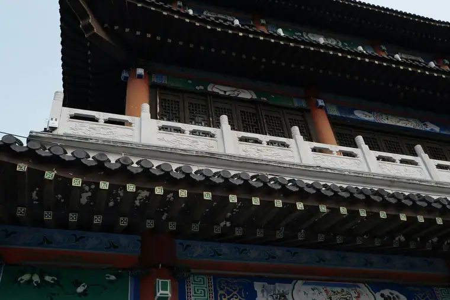

Jinan Airport Transfer & Private Car
Jinan Yaoqiang Airport (TNA) to downtown with licensed professional driver. Fixed price, free flight tracking. Gateway to Shandong's springs, lakes, and Mount Tai. Reliable Jinan car service for every trip. Book a private car in Jinan with just a few clicks. Pick-up and drop-off in Jinan, door to door.
Jinan in Pictures
Real scenes from Jinan — landmarks, streets and everyday life.

Jinan at a Glance
The City of Springs, where ancient artesian waters, willow-lined lakes, and the gateway to Mount Tai create a relaxed northern Chinese charm. Reliable Jinan car service for every trip. Book a private car in Jinan with just a few clicks. Pick-up and drop-off in Jinan, door to door.
Name Origin
Jinan (济南) means 'South of the Ji River,' referring to the ancient Ji River that once flowed north of the city. It has been an important cultural and administrative center in Shandong for over 4,000 years, with evidence of Longshan culture settlements in the area.
Education & Universities
Jinan is an important education center in Shandong. Shandong University is one of China's most prestigious universities, with a beautiful campus and strong programs in medicine, literature, and engineering. Shandong Normal University and Shandong University of Finance and Economics are also well-regarded.
Metro & Transportation
Jinan Metro has 3 lines connecting the city center, eastern high-tech zone, and some suburban areas. The city is also famous for its flat, bike-friendly layout. A private car is ideal for visiting springs, Daming Lake, and day trips to Mount Tai.
Natural Resources & Environment
Jinan is renowned as the City of Springs, with over 70 natural springs including Baotu Spring, Black Tiger Spring, and Five Dragon Pool. Daming Lake and Thousand Buddha Mountain add greenery to the urban core. The city enjoys a warm temperate climate with hot, rainy summers.
🗺️ Maps & Transit
Plan your route before you arrive. Download the official metro maps below.
Top Jinan Attractions
Discover Jinan's springs, lakes, and temples with a private licensed professional driver.
Baotu Spring
Famous Spring • City Symbol
The most famous of Jinan's 72 named springs, Baotu Spring has been bubbling up for over 3,500 years. The surrounding park is one of the city's most beloved spots.
🌊 Daming Lake
Historic Lake • Gardens
A large, scenic lake in the city center surrounded by pavilions, gardens, and willow trees. Boating on the lake is a classic Jinan experience.
⛰️ Thousand Buddha Mountain
Buddhist Mountain • City Views
A forested mountain on the southern edge of the city with ancient Buddha statues, temples, and panoramic views over Jinan.
⛰️ Black Tiger Spring
Natural Spring • Local Life
A powerful spring where locals gather daily to collect fresh drinking water. It's a great place to see everyday Jinan life.
⛰️ Shandong Provincial Museum
History • Artifacts
One of the largest provincial museums in China, with extensive collections of Shandong's ancient history, calligraphy, and art.
🏘️ Furong Street
Food Street • Nightlife
A narrow historic lane packed with street food vendors, snack stalls, and small shops. The best place to try local Jinan snacks in the evening.
Popular Jinan Routes
Fixed-price private car service for Jinan's most popular journeys.
Jinan Yaoqiang Airport (TNA) → City Center
From ¥240 (≈ $33.8)~30 km · 40–60 min · Economy/Business/MPV
Your driver meets you at arrivals, tracks your flight, and takes you directly to hotels near Daming Lake, Quancheng Square, or the railway station.
🏯 Jinan Spring City Tour (Full Day)
From ¥715 (≈ $100.7)8 hours · Business vehicle · Custom itinerary
Visit Baotu Spring, Daming Lake, Thousand Buddha Mountain, and Black Tiger Spring in one comfortable day.
🏔️ Jinan → Mount Tai
From ¥754 (≈ $106.2)~70 km · 1 hour · 10-hour day trip
A day trip to one of China's Five Great Mountains, with time to hike or take the cable car to the summit.
🏘️ Jinan → Qufu (Confucius Hometown)
From ¥754 (≈ $106.2)~140 km · 2 hours · 10-hour day trip
Visit the Temple, Mansion, and Cemetery of Confucius, a UNESCO World Heritage site.
Transparent Pricing in Jinan
Published rates, no estimate games. Check the numbers yourself before you book — and the price you see is the price your driver is paid from.
Fixed Price List — 济南市 (Jinan)
Published rates from our 2026 quote sheet. Renminbi first, USD for reference at 1 USD = ¥7.10. Every price below already includes tolls, parking, driver service and free airport waiting time (up to 60 minutes after your flight lands) — nothing is added on the day.
🛬 Airport & Intercity Transfer
One flat fare for airport pickup, drop-off or city-to-city — intercity costs the same as the airport run. 35 km and 60 minutes included; beyond that we charge by the minute and the kilometre at the rates shown.
| Vehicle | Seats | Bags | Fixed fare | USD | Beyond 35 km / 60 min |
|---|---|---|---|---|---|
| 4-seat Economy Sedan | 4 | 2 | ¥240 | ≈ $33.8 | ¥1.22/min · ¥5.41/km |
| 4-seat Comfort Sedan | 4 | 2 | ¥343 | ≈ $48.31 | ¥1.34/min · ¥5.99/km |
| 6-seat Business Van | 6 | 3 | ¥430 | ≈ $60.56 | ¥1.43/min · ¥6.37/km |
| 8-11-seat Business Van | 11 | 4 | ¥733 | ≈ $103.24 | ¥1.86/min · ¥8.28/km |
| 12-18-seat Minibus | 18 | 4 | ¥858 | ≈ $120.85 | ¥2.07/min · ¥9.24/km |
| 19-55-seat Coach Bus | 55 | 5 | ¥905 | ≈ $127.46 | ¥2.36/min · ¥10.51/km |
🚗 Hourly Private Charter
Book the car and the hours, keep the car for the day. Unused kilometres can be carried into the next tier, so a long day never turns into a penalty. The driver stays with you — you set the stops.
| Vehicle | 2h / 35km | 4h / 50km | 6h / 75km | 8h / 100km | 10h / 125km |
|---|---|---|---|---|---|
| 4-seat Private Car | ¥286 | ¥468 | ¥611 | ¥715 | ¥754 |
| 6-seat Business Van | ¥377 | ¥611 | ¥793 | ¥936 | ¥975 |
| 8-11-seat Business Van | ¥543 | ¥880 | ¥1142 | ¥1348 | ¥1404 |
| 12-18-seat Minibus | ¥651 | ¥1056 | ¥1370 | ¥1617 | ¥1685 |
| 19-55-seat Coach Bus | ¥782 | ¥1267 | ¥1644 | ¥1941 | ¥2022 |
Why travellers book Jinan with Chinawheely
Six things you get with every booking — in Jinan and across all 333 cities on the platform.
Licensed travel agency, not a ride-hail app
Chinawheely is a registered travel agency (L-HUB-101603). Your booking is a travel contract with a licensed operator — not a broker handing your number to whoever answers the phone.
One locked price, shown before you pay
The price you see is the price you pay. Tolls, parking, driver service and airport waiting time are already inside it. No surge pricing, no meter, no cash-on-the-day surprise.
Flight tracked, waiting time on us
We watch your flight number in real time. If it lands late or is delayed, your driver shifts with it and the waiting time stays on us — not on your bill.
A licensed driver who knows the city
Every car is driven by a professional local driver who knows the routes, the shortcuts and the parking that actually works near the attractions — with English communication and a name board on arrival.
Free changes up to 48 hours before
Plans move. Reschedule or cancel any booking free of charge up to 48 hours before your scheduled pickup, straight from your confirmation link.
A real human on WhatsApp, 8AM–12AM Beijing time
One message reaches a person who can re-price, re-route or re-plan your trip on the spot. No ticket queue, no chatbot loop.
Book Jinan at the published price
Pick your vehicle, see the fare line by line, and pay by PayPal or Alipay. Free changes up to 48 hours before pickup — or ask on WhatsApp and we will hold a car for you.
The quote is valid for 48 hours, and you can change or cancel free up to 48 hours before pickup.
Getting to Jinan: Airports & Railway Stations
Getting to Jinan by air, rail, or road
✈️ Airports
🏯 Jinan Yaoqiang International Airport (TNA)
Northeast of the city · 30 km to downtown
The main airport serving Jinan and Shandong province, with domestic and some international flights. A private car takes 40–60 minutes to downtown hotels.
🏯 Nearby Airports
Qingdao Jiaodong, Weifang Nanyin, Tai'an
Travelers heading to Mount Tai sometimes fly via Jinan or use high-speed rail from Qingdao. TNA is the main airport for Jinan itself.
🚄 Railway Stations
🗼 Jinan West Railway Station
Main HSR hub · Western district
The primary high-speed rail station for Jinan, serving trains to Jinan, Shanghai, Qingdao, and Tai'an. Connected to the city by bus and taxi.
🗼 Jinan Railway Station
Historic city center · Tianqiao district
The older main station near the city center, serving conventional and some high-speed trains. Convenient for hotels near Daming Lake and Baotu Spring.
🗼 Jinan East Railway Station
Eastern suburb · Licheng district
A newer station serving high-speed trains on the Jinan-Qingdao and other eastern routes. Useful for travelers heading to the eastern high-tech zone.
🌊 Daminghu Railway Station
Near Daming Lake · Central Jinan
A smaller station serving selected conventional trains, convenient for the Daming Lake and old city area.
🗼 Zhangqiu Railway Station
Suburban station · Zhangqiu district
Serves conventional and high-speed trains on the Jinan-Qingdao line. Useful for travelers staying in the eastern suburbs.
🗼 Need a Station Pickup?
We meet you at the exit with a name board and help with luggage.
Book Station TransferJinan's Best Photo Spots
Capture Jinan from the most photogenic angles.
💧 Baotu Spring Bubbles
Best in morning light
The clear bubbling water and traditional pavilions are most photogenic in soft morning light with fewer visitors.
🏞️ Daming Lake at Sunset
Best at sunset
The willow trees, pavilions, and reflections on the lake make a classic Chinese garden scene at dusk.
⛰️ Thousand Buddha Mountain Viewpoint
Best on clear days
The city panorama from the summit is worth the climb, especially on clear days with good visibility.
⛰️ 🐅 Black Tiger Spring at Dawn
Best early morning
Locals filling water bottles at the spring is a timeless Jinan scene. Early morning offers the best light and authentic activity.
🏯 Furong Street Lanterns
Best after dark
The narrow food street glows with red lanterns and neon signs at night, perfect for atmospheric street photos.
🏛️ Shandong Museum Grand Hall
Best during opening hours
The imposing modern architecture and grand entrance hall make for striking cultural photography.
Food & Shopping in Jinan
🍽️ Must-Try Jinan Cuisine
Sweet and Sour Carp (Tang Cu Li Yu)
Jinan's most famous dish, featuring crispy yellow river carp in a sweet and sour sauce. A must-try at local restaurants.
Jinan Youxuan (Fried Twisted Dough)
A crispy, savory fried dough twist, a popular street snack found at markets and food stalls.
Yellow River Carp Noodles
Hand-pulled noodles with carp slices in a rich, savory broth. A hearty local specialty.
Jinan Pancakes (Youxuan Bing)
Thin, crispy savory pancakes often eaten for breakfast or as a snack.
🛍️ Shopping Destinations
Quancheng Square
The commercial heart of Jinan, with large malls, department stores, restaurants, and the city's main square.
Wanda Plaza
A modern shopping and entertainment complex with international brands, cinemas, and dining.
Furong Street
A historic lane packed with food stalls, souvenir shops, and snack vendors. Best visited in the evening.
Shanxiadong Market
A traditional market area selling clothing, accessories, local goods, and street food at budget prices.
🎁 What to Buy in Jinan
Laoshan Green Tea
Although associated with Qingdao, fine green tea from Shandong is available in Jinan's tea shops.
Shandong Cloisonné
Colorful enamelware from traditional Shandong craft workshops.
Jinan Spring Water Bottles
Bottled spring water from Jinan's famous springs, a unique local souvenir.
Yellow River Stone Carvings
Decorative stones and small carvings inspired by the Yellow River.
Intangible Cultural Heritage & Living Crafts of Jinan
Meet the traditional arts that have shaped Jinan's identity for centuries.
🎭 Shandong Opera (Lv Opera)
One of China's major regional opera forms, known for its expressive singing, vivid stories, and strong local dialect. It is especially popular in rural Shandong.
Where to find it: Local theaters and cultural festivals in Jinan.
💧 🎨 Jinan Shadow Puppetry
Traditional leather shadow puppet performances using backlit screens, telling stories from history and folklore.
Where to find it: Folk art centers and temple fairs in Jinan.
🌊 🖌️ Qilu Seal Carving
The ancient art of carving personal and official seals from stone, a refined tradition in Shandong culture.
Where to find it: Art supply shops and calligraphy markets in Jinan.
🏘️ 🎋 Weifang Kite Craft
Though centered in Weifang, traditional Shandong kite-making is celebrated across the province, including in Jinan.
Where to find it: Cultural festivals and craft markets in Jinan.
🎭 Zaozhuago Willow Weaving
Traditional basket weaving using local willow, adapted for decorative and household items.
Where to find it: Local craft markets and cultural fairs.
⛰️ 🎶 Shandong Fast Tune (Shandong Qinshu)
A traditional storytelling art accompanied by string instruments, popular in older Shandong communities.
Where to find it: Community cultural centers and folk festivals.
Jinan Local Secrets
Insider tips to help you experience Jinan like a local.
Drink Spring Water
Locals fill bottles at Black Tiger Spring. The water is safe and fresh. Bring a reusable bottle and try it yourself.
Eat Youxuan for Breakfast
Look for fried twisted dough and savory pancakes at morning markets. It's a cheap, authentic start to the day.
Day Trip to Mount Tai
Mount Tai is only an hour away by car. A private driver lets you arrive early and beat the tour bus crowds.
Walk Daming Lake at Night
The lake is beautifully lit in the evening and much less crowded than during the day. A peaceful end to a sightseeing day.
Book Museum Tickets Online
The Shandong Provincial Museum is free but can be busy. Reserve a time slot in advance to avoid waiting.
Try Sweet and Sour Carp
This is Jinan's signature dish. Look for restaurants near Daming Lake or Quancheng Square that specialize in local cuisine.
Day Trips from Jinan
Explore beyond Jinan with these rewarding day trips.
Mount Tai (Tai'an)
From ¥754 (≈ $106.2)~70 km · 1 hour · 10-hour day trip
Climb one of China's Five Great Mountains and enjoy sunrise or sunset views from the summit.
Qufu (Confucius Hometown)
From ¥754 (≈ $106.2)~140 km · 2 hours · 10-hour day trip
Visit the UNESCO-listed Temple, Mansion, and Cemetery of Confucius.
Weifang (Kite Capital)
From ¥715 (≈ $100.7)~170 km · 2 hours · 8-hour day trip
Explore the kite museum, ancient city, and traditional crafts of the Kite Capital of China.
Zibo (Ancient Qi Capital)
From ¥715 (≈ $100.7)~110 km · 1.5 hours · 8-hour day trip
Visit the ancient Qi capital, museums, and famous Zibo barbecue restaurants.
Best season to travel in Jinan
Plan your trip around Jinan's seasons for the best experience.
Spring (Apr–May)
12–22°C · Mild & Blooming
Pleasant temperatures and spring water flowing strongly. The willows along Daming Lake turn green.
Summer (Jun–Aug)
24–34°C · Hot & Humid
Hot and humid, but the springs and lakes provide relief. Early mornings and evenings are best for outdoor sightseeing.
Autumn (Sep–Nov)
12–24°C · Cool & Clear
The best time to visit. Clear skies, comfortable weather, and beautiful autumn colors on Thousand Buddha Mountain.
Winter (Dec–Feb)
-2–8°C · Cold & Dry
Cold and quiet, but the springs steam slightly in the cold air. Museums and hot pot restaurants are cozy escapes.
Best Time to Visit jinan
jinan runs from -0.4 °C in January to 27.5 °C in July, an annual average of 14.7 °C and about 673 mm of rain across the year. The chart and the four seasons below are built from the city’s own climate record.
July is the warmest month at 27.5 °C and January the coldest at -0.4 °C, a spread of 27.9 °C. Rain is heaviest in July, which averages 201 mm, and lightest in January at 6 mm. Summer is the wettest stretch of the year at about 450 mm in total, while Winter is the driest at 22 mm.
For most travellers the winter window is the one to plan around: it carries only about 22 mm of rain across the whole season, against roughly 450 mm in summer. The 27.9 °C gap between the extremes also means the shoulder months either side of summer sit in a comfortable band, with many days in the high teens or low twenties.
Private transfers are booked by pickup time rather than by season, so the weather only changes what you do with the hours you have. In January a driver waiting at the terminal matters, because the afternoon average sits around -0.4 °C; by July the same day averages 27.5 °C and the car is most of the day’s comfort.
Spring
March, April, May · avg 15.4 °C · 89 mm rain
March averages 8.2 °C and May 21.8 °C, so the season warms fast.
Summer
June, July, August · avg 26.7 °C · 450 mm rain
July peaks at 27.5 °C, the warmest point of the whole year.
Autumn
September, October, November · avg 15.5 °C · 111 mm rain
September averages 22.0 °C and November 8.3 °C.
Winter
December, January, February · avg 1.2 °C · 22 mm rain
January bottoms out at -0.4 °C, the coldest point of the whole year.
Useful Chinese Phrases for Jinan
A few key phrases to help you navigate Jinan.
你好 (Nǐ hǎo)
Hello
Essential for getting around and communicating with your driver.
谢谢 (Xièxiè)
Thank you
Essential for getting around and communicating with your driver.
我要去趵突泉 (Wǒ yào qù Bàotū Quán)
I want to go to Baotu Spring
Essential for getting around and communicating with your driver.
这个多少钱？ (Zhège duōshao qián?)
How much is this?
Essential for getting around and communicating with your driver.
厕所在哪里？ (Cèsuǒ zài nǎlǐ?)
Where is the bathroom?
Essential for getting around and communicating with your driver.
多少钱？ (Duōshao qián?)
How much is it?
Essential for getting around and communicating with your driver.
Book Your Jinan Airport Transfer
Fixed price, licensed professional driver, free flight tracking. From TNA to any Jinan hotel.
Get Instant QuoteQuestions? WhatsApp +86-155-2777-1775
Travel Essentials for Your Jinan Trip
Make your Jinan journey smoother with these essential services.
Mobile Pocket Wi-Fi
Stay connected anywhere in China with a pocket Wi-Fi device. Pick up at TNA or have it delivered to your hotel.
Book Wi-Fi at ChinaWiFiGoEnglish-Speaking Guide
Explore Jinan's history with a professional English-speaking guide. Custom tours and skip-the-line access.
Book Guide at VIPChinaGuideMedical Services
Add a health checkup, dental cleaning, or TCM treatment to your trip. World-class care at a fraction of Western prices.
Book Medical at MediEscortChinaPopular Jinan Airport Transfer Routes
🚗 Jinan Airport Transfer Airport Transfer to Baotu Spring
Book Jinan Airport Transfer To Baotu Spring private car service with licensed driver. Fixed price airport transfers and city tours. No hidden fees.
View Route & Book →Best season to travel in Jinan
🌸 Best Season March – May / September – November — Spring (March–May) brings comfortable temperatures and the famous Jinan peonies bloom across Daming Lake. Autumn (September–November) offers crisp air and the best conditions for walking the ancient city walls.
The finest season. Peonies bloom at Daming Lake in April–May, drawing visitors from across China. Comfortable temperatures for walking the city wall and visiting Baotu Spring.
Hot and humid with frequent thunderstorms. The many springs and parks provide natural cooling. Early morning visits to Baotu Spring are most pleasant.
One of the best seasons. Cool, crisp air, beautiful autumn foliage at Thousand Buddha Mountain, and comfortable walking weather. The city is at its most peaceful.
Cold and dry. The city is less crowded, and the hot springs at the city's spas are at their most inviting. Hotel rates are at their lowest.
🧧 Chinese New Year 2027 in Jinan
Chinese New Year 2027 falls on January 29, 2027 -- the start of the Year of the Snake on the Chinese lunar calendar. Jinan at the heart of Shandong province is famous for its springs, Confucius heritage, and rich Shandong cuisine Spring Festival traditions. Keywords: when is chinese new year 2027, chinese new year 2027.
Chinese Spring Festival Facts
When is Chinese New Year 2027? January 29, 2027
Chinese New Year 2027 is January 29, 2027. Jinan in Shandong province is famous for its 72 famous springs and as the birthplace of Confucius -- Spring Festival traditions here are deeply rooted in Confucian culture.
Baotu Spring Illuminated for Spring Festival
Jinans famous Baotu Spring (趵突泉) is beautifully illuminated during Spring Festival -- the three springs glow softly in the dark, surrounded by red lanterns and traditional decorations.
Chinese Spring Festival Food -- Shandong Style
Jinan is famous for its steamed buns (馒头/mantou) and dumplings. Shandong cuisine is known as one of the eight great Chinese regional cuisines -- featuring large portions and honest, wheat-based flavours.
Top Spring Festival Activities
Baotu Spring Evening Walk (趵突泉)
Jinans famous Baotu Spring (趵突泉) is beautifully illuminated during Spring Festival -- the three springs glow softly in the dark, surrounded by lanterns. Free or nominal entry fee.
Daming Lake Evening Stroll (大明湖)
Daming Lake (大明湖) -- one of the largest urban lakes in China -- is beautifully illuminated during Spring Festival. Traditional pavilions glow on the dark water. Free.
Must-Try Spring Festival Food
Jinan Mantou (馒头)
Jinans famous steamed buns (馒头) -- large fluffy buns are a staple of the Shandong diet. During Spring Festival, families make their own mantou as a celebratory food.
Tip: Available at all Jinan bakeries and wet markets
Jinan Noodles (济南面条)
Jinan is famous for its hand-pulled noodles in rich beef broth -- a warming dish for cold January evenings. Available at all-day noodle shops throughout the city.
Traditional Customs
Baotu Spring Spring Festival Visit
Jinan families traditionally visit Baotu Spring (趵突泉) on the first day of the new year -- to pray for good fortune. The illuminated springs and lantern decorations create a magical atmosphere.
Visa & Entry Information for Jinan
Plan your China trip with confidence -- everything you need to know about visas, border crossings, and getting to Jinan.
China Visa Guide
Complete guide to tourist visas, business visas, application process, and 144-hour transit visa-free access at major Chinese cities.
Embassies & Consulates
Find Chinese embassies and consulates worldwide -- including USA, UK, Canada, Australia, Germany, France, Japan, South Korea and more.
Entry & Travel Guide
From airport immigration to paying with your phone -- everything you need to know before and after arriving in China.
🏆 Major Sports Events in Jinan
Jinan is central northern China's cultural and sports hub -- home to Shandong Luneng Taishan FC (Shandong's most successful football club), the Jinan Marathon, and the Shandong Heroes CBA team.
Jinan Marathon (济南马拉松)
2026: October (annual)
The Jinan Marathon (济南马拉松) passes the Daming Lake (大明湖), Quancheng Square (泉城广场), and the Yellow River area. 25,000 runners. One of Shandong province's most popular marathons.
Venue: Start: Daming Lake (大明湖); Finish: Olympic Sports Centre. Metro: Daming Lake (Line 2).
Chinese Super League Football (中超联赛 – 山东泰山)
2026 season: March to November
Shandong Taishan (山东泰山) is one of China's most successful football clubs -- multiple CSL titles. Home games at the Jinan Olympic Sports Centre (济南奥体中心). Rivalries with Jinan Guoan and Shanghai Shenhua are the biggest fixtures.
Venue: Jinan Olympic Sports Centre (济南奥体中心), Lixia District. Metro: Olympic Sports Centre (Line 3).
Shandong Heroes CBA Basketball (山东高速)
2026-2027 season: October 2026 to May 2027
The Shandong Heroes (山东高速) are one of CBA's competitive teams. Home games at the Shandong Sports Centre. The 2026-2027 season features a strong roster with championship ambitions.
Venue: Shandong Sports Centre (山东省体育中心), Lixia District. Metro: Shuyuan (Line 2).
Jinan Daming Lake Open Water Swimming (大明湖公开水域游泳)
2026: August (annual)
Open-water swimming event in the historic Daming Lake (大明湖) in central Jinan. Multiple distance categories. One of China's most scenic urban swimming venues.
Venue: Daming Lake (大明湖), Lixia District. Metro: Daming Lake (Line 2).
🎭 Concerts & Performances in Jinan
Jinan has a vibrant year-round performing arts scene from world-class symphony orchestras and international pop concerts to traditional cultural shows and annual arts festivals. Here is your guide to the best live performances in Jinan.
🎻 Classical Music & Symphony
Jinan Shandong Provincial Theatre Performance Season
Jinan premier performing arts venue. Hosts Shandong Provincial Symphony Orchestra, international ballet companies, opera productions, drama. Annual classical music season September through December.
Venue: Shandong Provincial Theatre (Shenghui Dayuan)
Season: Year-round
🎭 Traditional Cultural Performances
Jinan Lixia District Concert Hall Traditional Music
Local traditional music performances featuring Shandong folk music, Peking opera excerpts, classical Chinese instrumental pieces. Intimate venue for experiencing Jinan cultural heritage.
Venue: Jinan Lixia Concert Hall
Season: Year-round (regular)
🌙 Free Nightly Performances
Daming Lake Night Cultural Performances
Nightly cultural performances at Daming Lake featuring traditional Chinese music, water-based dance shows, lantern processions. Beautiful setting with illuminated ancient city walls.
Venue: Daming Lake Scenic Area
Season: Year-round (outdoor Apr-Oct evening)
🎵 Music & Arts Festivals
Jinan Spring Water Festival Folk Performances
Annual festival celebrating Jinan famous springs. Features traditional Shandong folk music, lion dances, dragon lantern processions, traditional opera performances at Baotu Spring.
Venue: Baotu Spring and Quancheng Square venues
Season: August-September annually
Shandong University Arts Festival
Annual arts festival at Shandong University featuring student performances, visiting artists, cultural exchange concerts. Classical music, traditional Chinese instruments, drama and dance.
Venue: Shandong University Centre for the Arts
Season: April-May annually
Attend a Jinan Concert with a Private Car
Avoid metro crowds after the show. Our licensed professional driver will drop you at the door and pick you up after. Available for all venues in Jinan.
Book Concert Transfer⚽ Major Sports Events in Jinan
Jinan hosts an impressive calendar of major sports events throughout the year. From professional football and basketball to international marathons and winter sports, here is your complete guide to sports in Jinan for 2026 and 2027.
⚽ Football & Soccer
Chinese Super League (CSL) - Shandong Taishan FC Home Matches
Season: March-November 2026 Year: 2026
Shandong Taishan is China most successful football club with 5 CSL titles and 4 FA Cups. 60,000-seat Olympic Sports Centre Stadium is largest in Shandong. 2026 season: March-November.
Venue: Jinan Olympic Sports Centre Stadium
🏃 Marathons & Running
Jinan International Marathon
Season: October annually (2026 TBC) Year: 2026
Jinan Marathon passes within Baotu Spring park, one of few marathons in world through a legendary spring garden. Also visits Daming Lake and Olympic Sports Centre.
Venue: Baotu Spring to Daming Lake to Olympic Centre
🏃 Athletics & Track
Shandong Province Athletics Championships
Season: June annually Year: 2026
Annual Shandong Province Athletics Championships at Jinan Olympic stadium featuring track and field from all cities in Shandong.
Venue: Jinan Olympic Sports Centre Stadium
🚣 Rowing & Water Sports
Jinan Water Sports Festival - Daming Lake Rowing
Season: June-August annually (summer) Year: 2026
Water sports festival on Daming Lake featuring rowing, dragon boat races, canoe events against backdrop of ancient city walls and pavilions.
Venue: Daming Lake
🏊 Swimming
Shandong Province Swimming Championships
Season: July annually Year: 2026
Annual Shandong Province Swimming Championships at Jinan Olympic Aquatics Centre featuring Olympic-level swimmers from across province.
Venue: Jinan Olympic Aquatics Centre
Get to Jinan Sports Events with a Private Car
Avoid metro crowds on match day. Our licensed professional driver takes you door to venue and back. Available for all stadiums, arenas, and courses in Jinan.
Book Sports TransferTea Culture & Teahouse Guide in Jinan
Jinan's tea culture is inseparable from its water. The springs that gave the city its name are the reason people here have always brewed tea against the city's own water rather than any imported kind.
Baotu Spring sits in Lixia District and is the source of the Luo River. The Spring Classic of the Spring and Autumn Annals records the meeting of the Duke of Lu Huan, the eighteenth year of his reign, 694 years before the common era, at Luo, which is how the spring was written into the record in the first place. The water has been flowing, and being argued over, ever since.
The spring has stopped before. It ran dry for the first time on 30 March 1976, then again from 14 March 1999 to 17 September 2001, a stoppage of 926 days, before it came back on 6 September 2003. On 18 October 2021 the level reached 30.18 metres, the highest since 1966; below 28.15 metres the authorities issue a yellow warning, and red alerts begin at 27.60 metres.
Brewing against that water is the point, and the city has turned the habit into a festival. A lantern fair has been held at the spring every year since 1980, though the 2020 to 2022 editions were cancelled. The broader Chinese teahouse tradition that surrounds this is old: the first tea houses date from the Tang dynasty between 713 and 741 AD, the Song period turned them into chasi and chalou, and 2012 brought the national teahouse code, SB/T 10654-2012.
The spring's water level on 18 October 2021, the highest recorded since 1966.
How long Baotu Spring stayed dry, from 14 March 1999 to 17 September 2001, before it returned in 2003.
The first lantern fair at the spring; the 2020 to 2022 editions were cancelled.
Book the car for a morning start so the queue at the spring is short, and have the driver hold for the lantern fair after dark in season rather than circling the Lixia one-way system.
More Jinan Guides & Transfers
Airport transfers, day trips and practical guides for Jinan — pick the one that matches your itinerary, then book the car in a minute.
Jinan Airport Transfer to Baotu Spring
Book Jinan Airport Transfer To Baotu Spring private car service with licensed driver
Best Time to VisitJinan Best Time to Visit
Book Jinan Best Time private car service with licensed driver
Day TripsJinan Day Trips & Excursions
Book Jinan Day Trips private car service with licensed driver
Food & ShoppingJinan Food & Shopping Guide
Book Jinan Food Shopping private car service with licensed driver
Photo SpotsJinan Best Photo Spots & Photography Locations
Book Jinan Photo Spots private car service with licensed driver
Tea CultureJinan Tea Culture & Tea House Guide
Book Jinan Tea Culture private car service with licensed driver
More China destinations
Compare routes, published prices and local driver tips across the cities we cover.